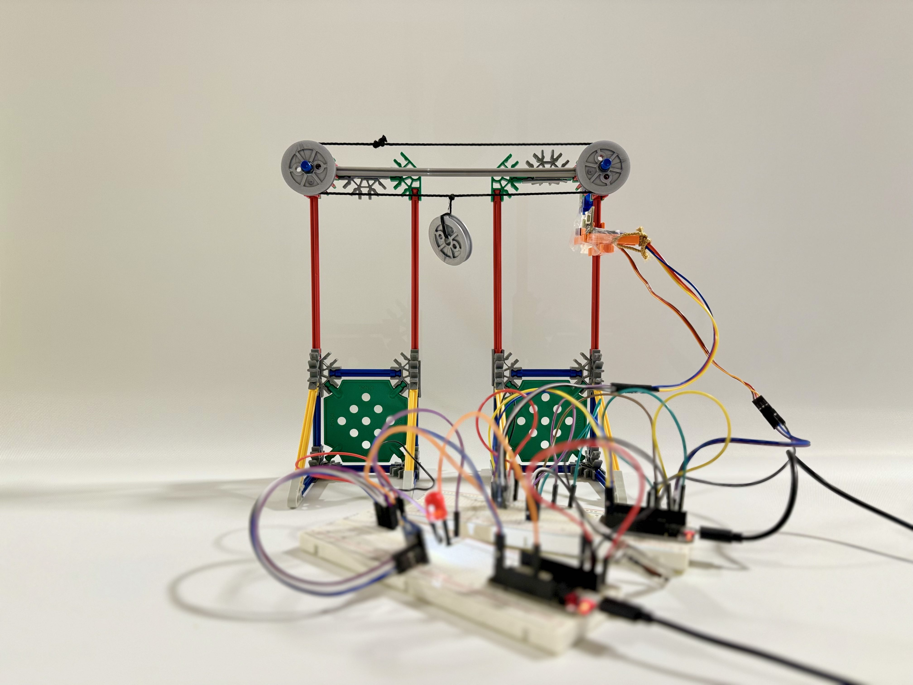
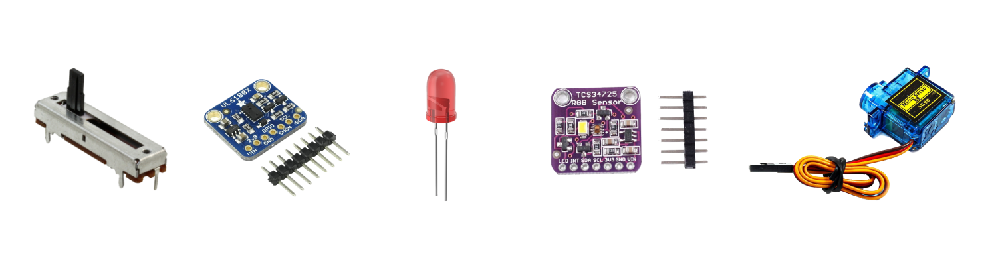
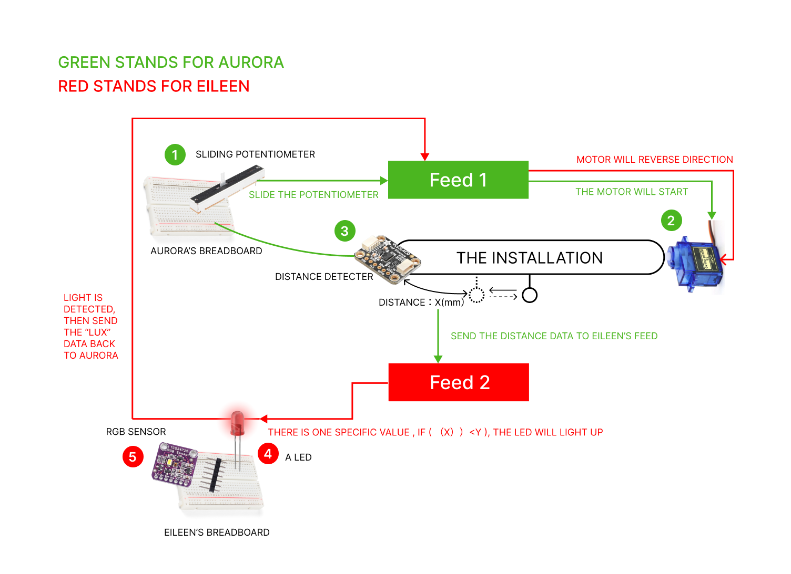
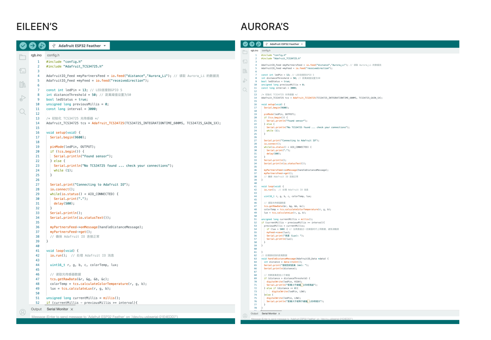
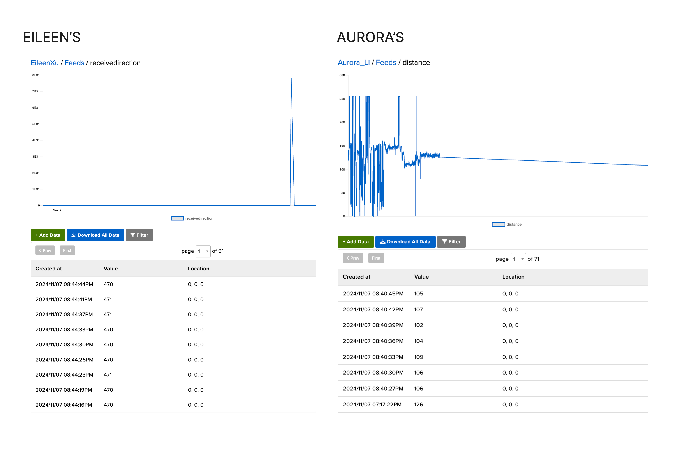
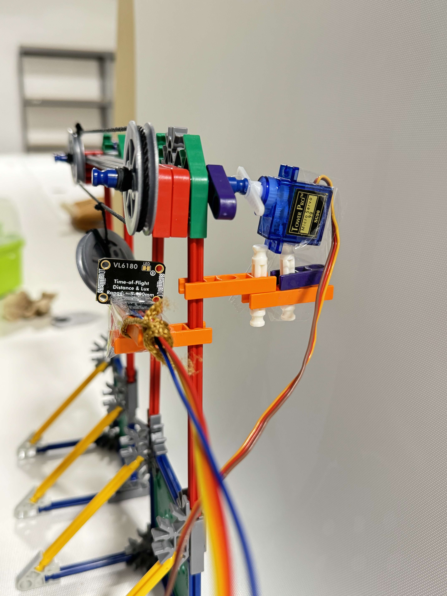
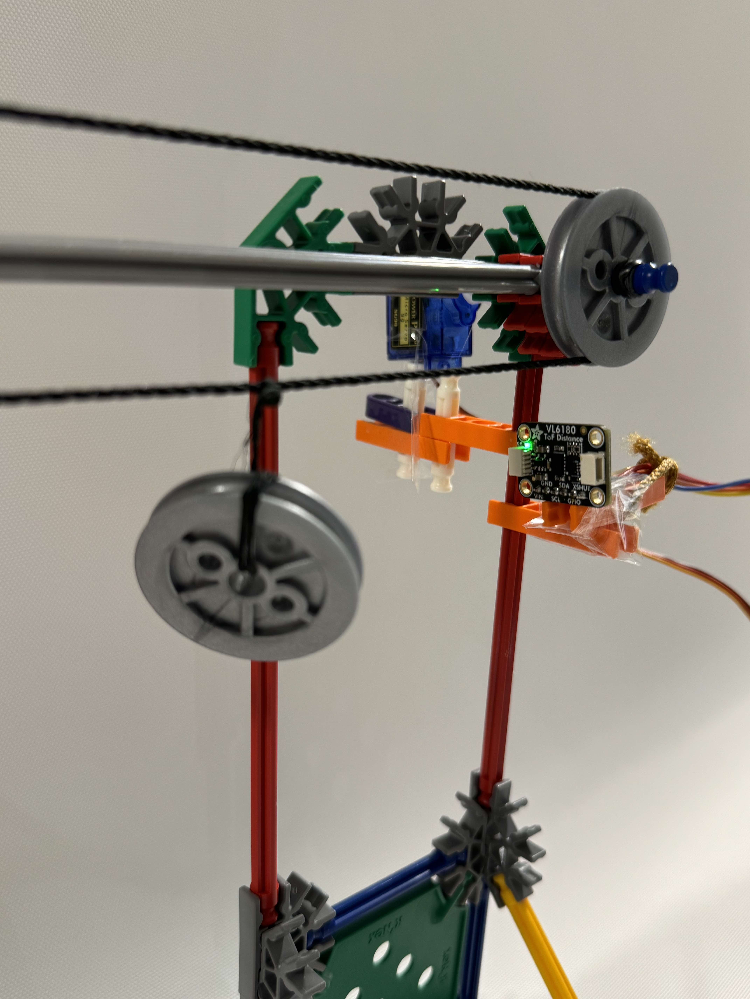
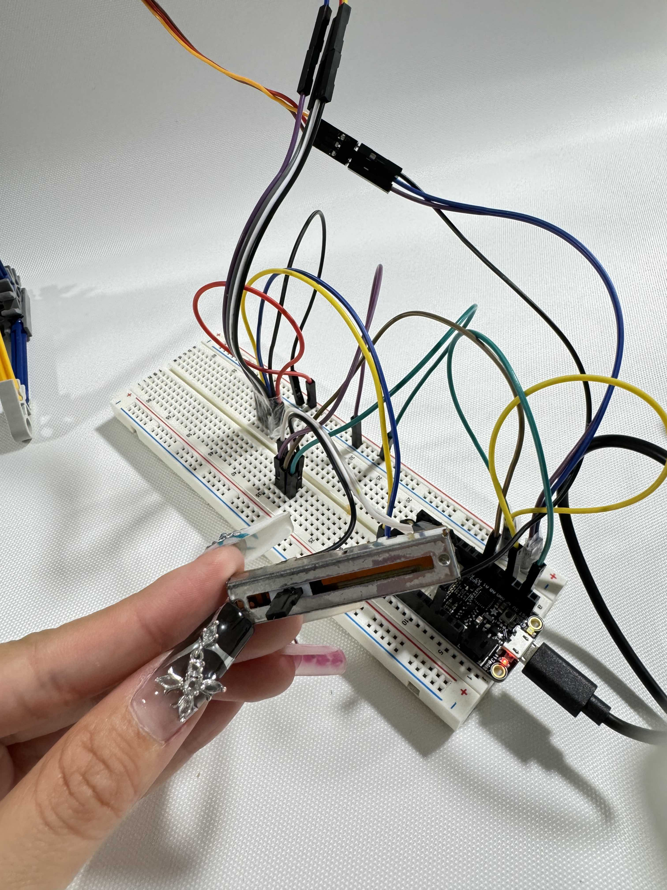
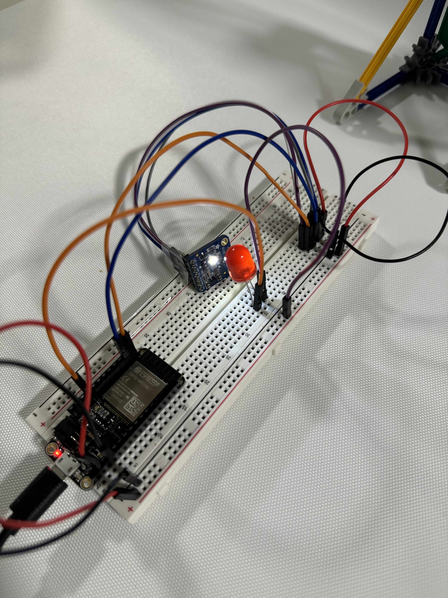
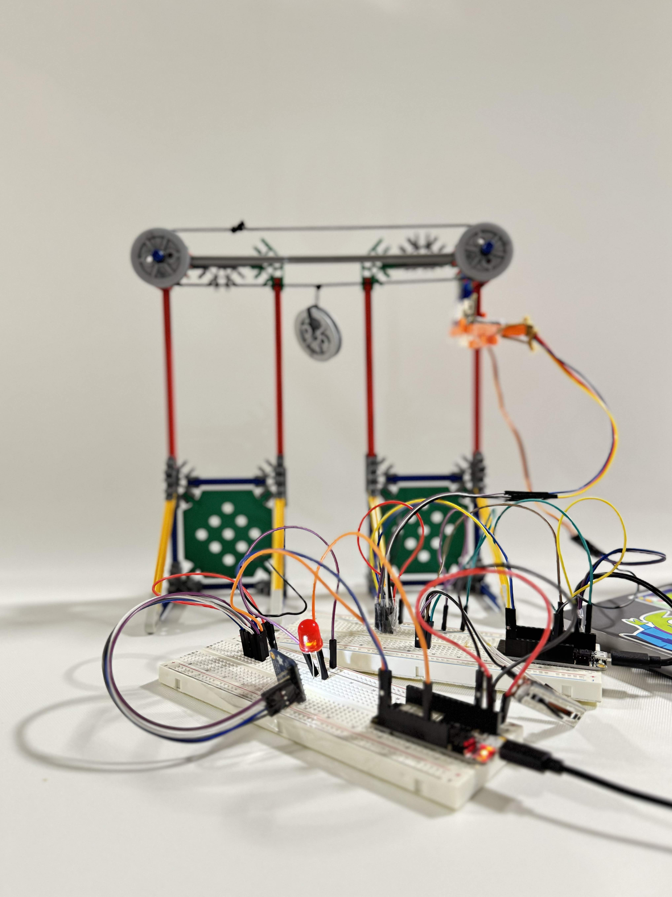

Signal Tug of War is an interactive system designed to explore the concept of data-driven communication between two users, represented here as "Eileen" and "Aurora." The project emphasizes real-time data exchange, feedback loops, and tangible interactions through sensory input and output mechanisms. This system not only highlights the responsive connection between user inputs but also serves as a metaphorical "tug of war" where data, feedback, and physical changes influence interactions in meaningful ways. 
2 breadboards, a sliding potentiometer, a distance sensor, a led, a RGB sensor, a micro servo motor. 
1. Aurora slides the potentiometer → Generates input data (Feed 1) → Motor starts or reverses based on input.
2. Aurora's distance detector measures proximity → Sends distance data (Feed 2) to Eileen.
3. Eileen's system evaluates distance data → If condition is met (e.g., X < Y), LED lights up.
4. Eileen's RGB sensor detects LED illumination → Measures and sends "lux" data back to Aurora.
5. Aurora's system receives "lux" data → Motor reverses direction, restarting the communication loop.

Here are the Arduino codes for Eileen's feed and Aurora's feed. 
Here are the real-time feeds' reactions. 
The first part: The sliding potentiometer controls the motor's rotation based on its position.
The second part: The motor drives a mechanical device that moves a ring through a connected system.

The third part: The LED lights up, and its light is detected by a light sensor as feedback.

    